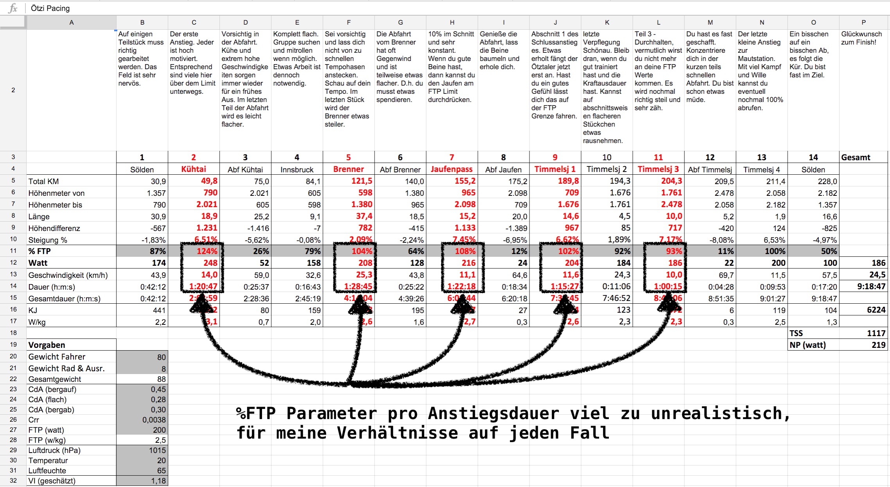

Ötztaler Radmarathon – Realistische Zielzeit. Eine Prognose. Meine Strategie!

Der Ötztaler Radmarathon: 238km, 5500 Höhenmeter, 4 Alpenpässe. Seine Fragen und sind es nicht immer die gleichen Antworten die gut 4000 verrückte Radmarathonisti Ende August beim Ötztaler suchen? Bei ersteren sind sich alle irgendwann einig – spätestens am Start. Letztere werden erst am Renntag spät nachmittags beantwortet.
Wie wird gleich nochmal das Wetter? Ich hoffe doch trocken und nicht zu viel Sonne. Regen? Schnee? Gabs ja alles schon in den letzten Jahren. Unfall-, sturzfrei und Hauptsache ins Ziel kommen! Aber: Sub9? Wär geil! Sub10? Oder doch „nur“ Sub11?
Mit dem richtigen Pacing Tool lässt sich diese Diskussion auf ein ganz anderes Niveau heben. Vor allem dann, wenn dir klassische Ansätze, wie simple Vergleiche von Vorjahresleistungen und etwas Bauchgefühl am Ende nicht aussagekräftig genug sind.
Jürgen Pansys hat in mühevoller Detailarbeit ein wissenschaftliches Werkzeug für den Ötztaler Radmarathon mittels Leistungsmessung entwickelt. Noch nie hatte ich so ein ausgeklügeltes Spielzeug zur Verfügung. Er hat wirklich ausgezeichnete Arbeit geleistet.
2015 habe ich selbst meine Rennstrategie beim Ötztaler Radmarathon damit geplant und meine Durchgangszeiten und mögliche Zielfenster errechnet.
Ist es zuverlässig? Was sollte ich bei der Prognose beachten? Was ist realistisch?
Das Ötztaler Radmarathon Pacing Tool
Legen wir los und folgen Jürgens Anwendungsempfehlungen. Was das Tool im kleinsten Detail macht beschreibt er sehr gewissenhaft hier.
Anwendungsempfehlungen:
- Nur grau hinterlegte Felder dürfen geändert werden.
- Die Schwellenleistung (FTP) entspricht der Leistung, die man über eine Stunde treten kann. Kennt man seine eigene Schwellenleistung nicht, dann sucht man sich am besten einen 30min langen Berg und fährt diesen so schnell es geht hinauf. Danach gibt man die durchschnittliche Geschwindigkeit, Größe, Gewicht etc. bei Kreuzotter ein und erhält eine Wattzahl, die in etwa der Schwellenleistung entspricht, sowie zusätzlich CdA und weitere Parameter, die auch im Ötzi Excel Sheet verwendet werden können.
- Kritischer Punkt in der Berechnung und vermutlich auch größte Fehlerquelle ist der Luftwiderstand (CdA), da man in den Abfahrten bzw. Flachstücken vermutlich in Gruppen unterwegs ist und daher der reale Luftwiderstand wesentlich geringer sein wird als dies in meinem Modell der Fall ist. Ich habe daher die CdA-Werte für bergab & flach etwas nach unten korrigiert. Eine grobe Berechnung des eigenen CdA-Wertes auf Basis der Körpergröße und Lenkerposition kann man auf kreuzotter.de durchführen.
- Beim Gewicht von Rad und Ausrüstung nicht auf Wasserflaschen, Ersatzschlauch, Werkzeug, Essen und ähnliches vergessen.
- Alle anderen Werte sollten selbsterklärend sein oder besser nicht angegriffen werden, falls man die Bedeutung eines Wertes nicht versteht.
- Um schnell zu einem Ergebnis zu kommen, reicht es aus, FTP und Gewicht anzupassen und alle übrigen Felder zu belassen, wie sie sind.
Ich bin den Anwendungsempfehlungen gefolgt und habe wie beschrieben meine virtuelle Ötztaler Zeit errechnet:

- Mein Systemgewicht war noch der einfachste Werte.
- Bei der Schwellenleistung (FTP) wollte ich genau sein und fand es natürlich sexy einen möglichst tollen Wert nehmen zu können. Ich habe mir gezielt Trainingsbestleistungen aus naher Vergangenheit gesucht und meine Leistungsdiagnostik einbezogen. Auch Kreuzotter oder Strava hatte ich als Gegenprobe geprüft. 256 Watt (!) standen am Ende in dem Excel-Sheet.
- Der nächste Schritt war das Strategie-Mapping auf die verschiedenen Teilstücke des Rundkurses: So wenig wie möglich in den Abfahrten investieren und in den Anstiegen nicht ans Limit gehen. Ich kalkulierte mit einer 30 prozentigen Durchschnittsleistung in allen Abfahrten und zwischen 70 bis 85 Prozent des FTP-Wertes in den Anstiegen.
Ich sollte den Ötztaler demnach in circa 9 Stunden und 40 Minuten finishen.
Klang für mich damals als vernünftig mit gut Luft nach oben. Ich war mir meine Sache sehr sicher, da ich neben reinster Theorie auch einiges an Praxis einfließen lassen konnte.
Das Ergebnis ist bekannt: Nach 9 Stunden und 32 Minuten erreichte ich 2015 das Ziel in Sölden.
Ich freute mich wie ein kleines Kind, war und bin mächtig stolz. Diese Zeit hatte mir ja bereits die virtuelle Prognose vorhergesagt.
Wieviel Wahrheit steckt in der Prognose?
Obwohl meine Vorhersage und die Zielzeit nicht weit auseinander sind bin ich nach weiteren Ötztaler Auswertungen zu einem anderen Schluss bekommen. Fangen wir aber mit ein bisschen Theorie an.
Functional Threshold Power
Die Funktionsleistungsschwelle (FTP) ist der Bereich in dem du maximale Leistung auf dem Rennrad über einen Zeitraum von 60 Minuten halten kannst. Diese Leistung, die sogenannte Schwellenleistung, ist Grundlage zur Ableitung von Trainingsbereichen.
Bestimmung des FTP
Es gibt einige Wege oder Berechnungsmodelle zu deinem FTP zu gelangen. Folgst du Ansätzen von Kreuzotter oder bist der Meinung, dass du mit geschätzten Strava Wattwerten arbeiten könntest, muss ich dich leider enttäuschen: **Das ist der Holzweg!
** Beide spuckten mir viel zu hohe FTPs aus. Ist auf den ersten Blick zwar super motivierend, aber bei einem Radmarathon dieser Kategorie machen 10 Watt +/- enorm viel Zeit bei der Endabrechnung aus.
Am sinnvollsten wäre es noch dem von Hunter und Coggan empfohlenem 20 Minuten Praxistest zu folgen. Damit kannst du zumindest deine Funktionsleistungsschwelle mit einer praxiserprobten Methode ermitteln und daraus Trainingsbereiche ableiten.
Voraussetzung ist, dass du einen Wattmesser am Rad montiert hast. Ein Profil das 20 Minuten Vollgas zulässt wäre sehr zu empfehlen. Perfekt ist ein kleiner und flacher Rundkurs.
Wichtig! Halte dich exakt an das Testprotokoll um falsche Werte auszuschließen:
- 20 Minuten locker einfahren
- 3 x 1 Minute mit einer Trittfrequenz von 100 Umdrehungen pro Minute, zwischen den Intervallen jeweils 1 Minute locker rollen
- 5 Minuten locker rollen
- 5 Minuten volle Hütte und Vollgas. Du solltest das Gefühl haben in der letzten Minute noch leicht zulegen zu können
- 10 Minuten locker rollen
- Nun heißt es 20 Minuten auf die Zähne beißen. Analog den 5 Minuten davor solltest du ein Tempo wählen, dass du gerade so über die 20 Minuten halten kannst. Verlasse dich auf dein Gefühl und versuche 20 Minuten lang alles rauszuhauen
- 10-15 Minuten locker ausrollen
Entscheidend ist nun das 20 Minuten Fenster. Ermittle deine Durchschnittswattleistung für diese 20 Minuten. Davon ziehst du nochmal 5 Prozent ab, da die Funktionsleistungsschwelle (FTP) über einen Zeitraum von 60 Minuten auf Grundlage einiger zuverlässiger Studien so definiert ist. Angenommen deine Durchschnittsleitung über 20 Minuten lag bei 250 Watt, dann ist dein FTP bei 237,5 Watt. Das wäre die Zahl mit der du ins Ötztaler Pacing gehen könntest.
Die Praxis
Die Theorie sagt: „Es wäre sehr ermüdend eine Stunde lang am Limit zu fahren. Es würde Phasen höherer Belastung erfordern und teils nicht wirklich in Trainingspläne passen.“
Die Praxis antwortet: „Genau das sind die Szenarien die du bereits im Training simulierst und simulieren solltest um dich auf so einen Radmarathon vorzubereiten. Du musst nicht „betrügen“ und deinen FTP-Wert mit einem 20-minütigen Test bestimmen.“
Wenn du eh schon mit einem Powermeter trainierst und fleißig Daten sammelst, dann ist es auch ohne FTP-Test einfach deine Leistungskapazität für eine Stunde zu ermitteln.
Willst du mit zuverlässigen und realistischen Werten arbeiten schau dir aktuelle Durchschnittsleistungen letzter Trainingsergebnisse an.
Leistungsdurchschnitte über Zeitfenster von 20, 30, 60 und 90 Minuten liefern dir alle wichtigen Parameter die du brauchst.
Die Lücke zwischen dem 20 und 30 Minuten Wert mag gar nicht so groß sein. Die zur 60 Minutenleistung oder den 90 Minuten schon eher. Letztere sind genau die FTP-Parameter mit denen du im Pacing Tool arbeiten solltest.
Warum? Weil dich beim Ötztaler vier richtig lange Anstiege erwarten. Alle halten dich für locker 60 Minuten in Schach. Das Timmelsjoch am Ende sogar deutlich länger als 90 Minuten.
Analyse meiner Ötztaler Leistung aus dem Jahr 2015
Von meiner Strategie in Abfahrten wenig zu investieren und in den Anstiegen nicht ans Limit zu gehen bin ich während des Ötztaler Radmarathons nicht abgewichen. Mein Bauchgefühl sagt mir das einfach!
Allerdings habe ich vollkommen andere Wattwerte in den verschiedenen Abschnitten geleistet als ich virtuell im Vorfeld errechnet hatte.
Nehmen wir also das Excel machen eine Rolle rückwärts und rechnen zurück:
- Ich analysiere jeden einzelnen Teilabschnitt.
- Schaue mir real produzierten Durchschnittswattwerte an.
- Pflege diese in das Pacing Sheet ein (Zeile 12).
- Mit meiner Zielzeit von 9 Stunden 32 Minuten lässt sich nun auch der FTP-Wert neu errechnen.
- Das Ergebnis ist überraschend: Statt meinen tollen 256 Watt stehen nur 190 Watt.
- Ein letzter Blick auf meine Wattleistungen aus Trainingseinheiten in den Wochen vor dem Ötztaler schließen den Kreis. Meine 60 minütigen und 90 minütigen Wattwerte entsprechen ungefähr diesem Niveau.
Profivergleich
Spannend ist noch ein direkter Vergleich meiner Leistung mit richtigen Profis und deren Wattleistungen. Stellen wir also eine sehr einfache Milchmädchenrechnung an. Grundlage sind aus dem Internet bekannte Bestwerte ehemaliger Profiradrennfahrer der Herren Pantani, Ullrich und Armstrong. Annahme ist, dass jeder der Profis mit genau der gleichen Strategie unterwegs gewesen wäre wie ich.
| Profi | Gewicht | Wattleistung | Datum | Prognose | Differenz |
|---|---|---|---|---|---|
| Marco Pantani | 56kg | 503W | TDF Alpe d’Huez 1997 | 5:48:00 | -3:44:00 |
| Jan Ullrich | 71kg | 484W | TDF Alpe d’Huez 1997 | 5:32:00 | -4:00:00 |
| Lance Armstrong | 72kg | 488W | TDF Sestriere 1999 | 5:32:00 | -4:00:00 |
Empfehlung
- Du brauchst einen Leistungsmesser. Nur damit bekommst du zuverlässige Daten.
- Arbeite rein mit Durchschnittswerten aus deinem Training.
- Nimm Wattwerte die mindestens über Zeiträume von 60 bis 90 Minuten erfasst wurden.
Sollte deine Rennstrategie meiner ähneln kannst du dir jederzeit die aktuelle Online Version in Google Tabellen anschauen und auf Basis dessen deine Strategie erweitern.
Sehr gerne kannst du auch dazu beitragen das Pacing noch genauer, noch besser, noch ausgefuchster machen. GitHub bietet uns eine tolle Kollaborationsplattform. Die Datei in Reinformat, auch zum Download, findest du dort.
Zum Tooling - Download
[Online Version (Google Tabellen)] [Datei herunterladen (GitHub)]
Hab einfach Spaß! Es ist ein großartiger Radmarathon! Und bis dahin lass dir meinen tollen Mahlgrad an Kaffeesatzleserei schmecken.
‹ Golden Cheetah Garmin Connect - Download, archive, cloud-backup and auto-import your activities!
Ötztaler Radmarathon – Karenzzeiten und Taktik. Marschtabelle und Verpflegungsplanung! ›